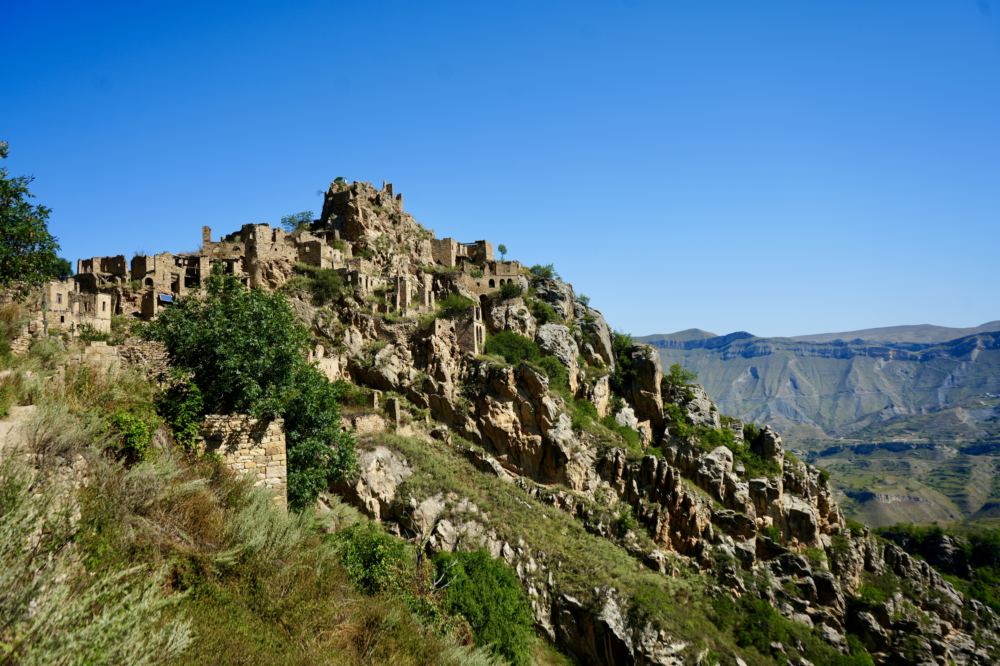

The Team
Meet the people
behind the lens.

Co-Founder · Cinematographer
Stas
Stas is the eye behind the camera — drawn to the kind of light that only happens at the wrong time of day in the wrong part of the world. A self-taught cinematographer, he's spent years refining a visual language that's equal parts discipline and instinct.
His approach to travel is to stay longer than feels comfortable, eat what's on the table, and never leave before sunset. Most of the channel's most-watched frames were shot by Stas at 5am when Nick was still asleep.

Co-Founder · Storyteller
Nick
Nick is the one who asks strangers for directions they didn't ask for, and ends up at a family dinner by mistake. He handles narration, writing, and the chaotic logistics of getting two people with too much camera gear to places that barely show up on maps.
He started travelling seriously after a trip to Southeast Asia that was supposed to be two weeks and became four months. That trip didn't make it onto YouTube. Every trip since has.